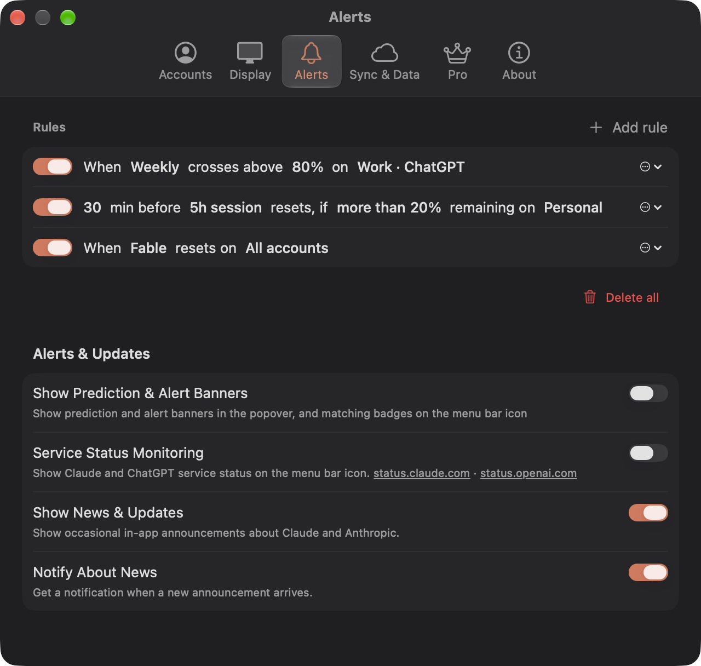
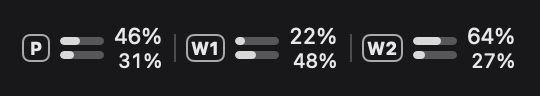
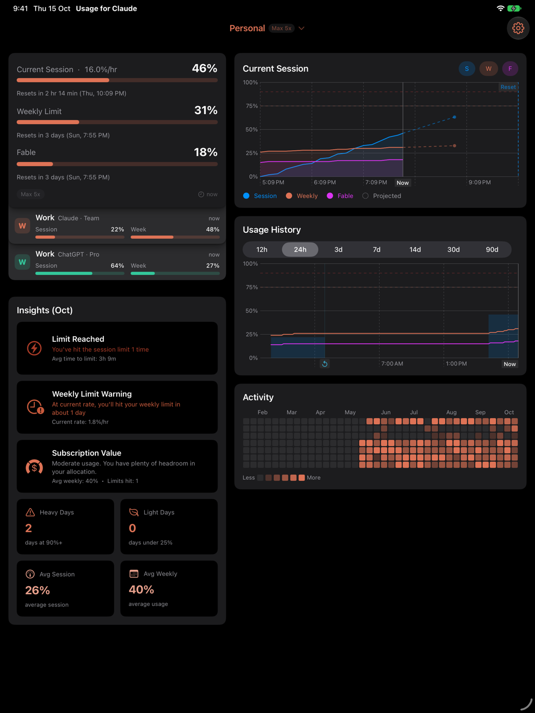
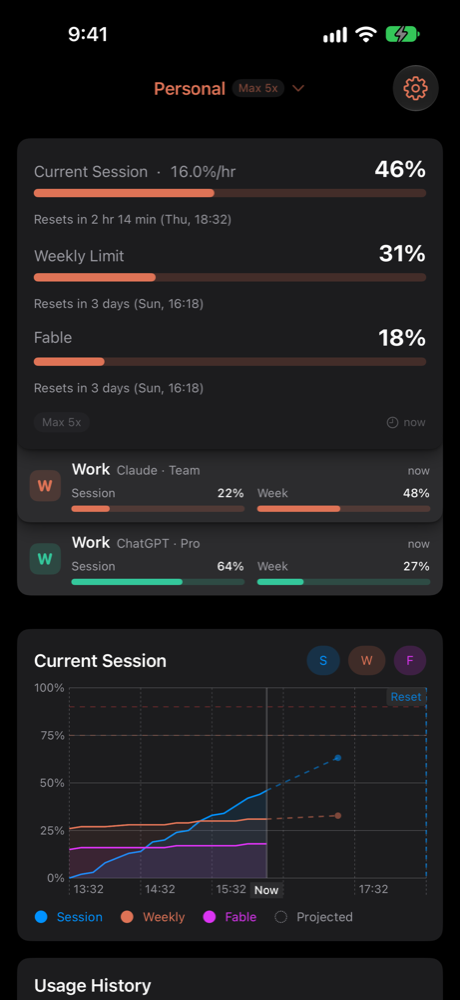

Three view styles
Minimal, Detailed, Chart
Version 4 is the biggest update yet. It brings ChatGPT accounts, new ways to see every account at once, a redesigned Settings window and the full app on iPad.
Pick Minimal, Detailed or Chart, and every account you track appears in one stack in that style. Click a card to switch accounts on that device.
Sign in with ChatGPT and see your Codex session and weekly limits right beside Claude’s, in the popover, the Dashboard, widgets and alerts.
Minimal, Detailed, Chart
Codex limits next to Claude

Six clear tabs

Several accounts side by side, on the Mac
Major update


The same stack, charts and alerts, synced over iCloud
Version 4 is a free update for everyone, on Mac, iPhone and iPad.